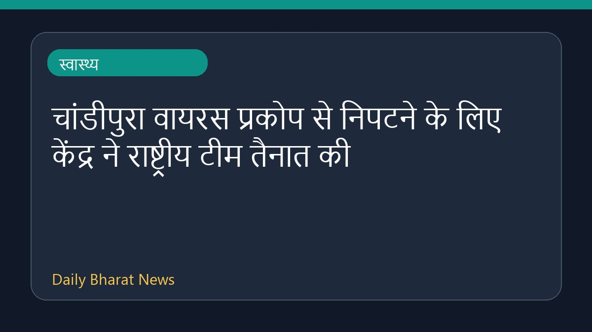

चांडीपुरा वायरस प्रकोप से निपटने के लिए केंद्र ने राष्ट्रीय टीम तैनात की

चांडीपुरा वायरस के बढ़ते मामलों और इसके प्रकोप को नियंत्रित करने के लिए केंद्र सरकार ने एक राष्ट्रीय संयुक्त प्रतिक्रिया टीम को तैनात किया है। कई संस्थानों द्वारा इस वायरस की जांच को तेज कर दिया गया है। गुजरात और राजस्थान जैसे प्रभावित राज्यों की सहायता के लिए यह कदम उठाया गया है। मीडिया रिपोर्ट्स के अनुसार, अकेले मानसून के दौरान गुजरात में इस खतरनाक वायरस से 22 बच्चों की मौत हो चुकी है। इस गंभीर स्वास्थ्य संकट से निपटने के लिए लक्षण, रोकथाम और उपचार के उपायों पर ध्यान दिया जा रहा है।
मूल स्रोत: Health News Sources
What is Chandipura virus? Symptoms, outbreaks, treatment and prevention explained - BusinessLine ↗
What is Chandipura virus? Symptoms, outbreaks, treatment and prevention explained - BusinessLine ↗